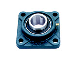

滾珠螺桿/線性滑軌
客服專線：(03)280-6015
產品特性
耐高溫/低溫 連座軸承
高溫軸承專為高溫工況環境設計，採用特殊的材料和熱處理工法製造，軸承內部填充高溫油脂或低溫油脂，能提供良好的疲勞壽命並保持高溫下尺寸穩定。適用於熱處理設備，紡織機械，鍋爐設備或冷凍廠之設備。
抗衝擊重載連座軸承
採用鑄鋼軸承座，在特別惡劣的環境中，鑄鋼軸承座的抗扭強度是普通軸承座的2.5倍，可以減少彎曲疲勞損傷的影響。適用於礦山機械，採石廠，漂染設備。
高速低噪音連座軸承
低噪音高轉速，輕接觸式密封設計，採用的軸承座強度高而重量輕，在風機行業、空調風扇中使用的連座軸承單元要求高速旋轉，低發熱、低振動、長壽命等。為了滿足所要求的性能，軸承套圈加工及滾動體提高了相底的精度，適用於風機為首的特殊行業。
防水抗潮溼連座軸承
帶有特殊的三唇密封防塵防水設計，嚴格密封，具有較大的接觸密封扭矩，採有特殊的防水油脂，溫度範圍廣，具有較強的粘附力和抗沖洗性。適用於環境特別惡劣的農業機械、麵粉廠、紡織機械上。
食品機械專用連座軸承
不銹鋼帶座軸承，經過美國FDA認證的食品級油脂，無毒無污染，抗腐蝕。不銹鋼軸承座不會出現其他材料的容易出現的剝落、裂紋、變形，特別適用於食品機械。高性能的不銹鋼軸承套圈及滾動體材料採用 SUS440C 在衛生耐蝕的基礎上同樣提供可與高碳鉻鋼媲美的高精度及耐磨性。
連座軸承系列
 |
 | ||||
| UCP連座軸承 | UCPH連座軸承 | UKP連座軸承 | UCF連座軸承 | UCFL連座軸承 | UCFB連座軸承 |
| UCT連座軸承 | UCPA連座軸承 | UCFC連座軸承 | SBLF連座軸承 | UFL000連座軸承 | UP連座軸承 |